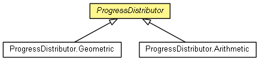

org.eclipse.net4j.util.om.monitor
Class ProgressDistributor
java.lang.Object
 org.eclipse.net4j.util.om.monitor.ProgressDistributor
org.eclipse.net4j.util.om.monitor.ProgressDistributor
- Direct Known Subclasses:
- ProgressDistributor.Arithmetic, ProgressDistributor.Geometric
- public abstract class ProgressDistributor
- extends Object

- Since:
- 2.0
| Methods inherited from class java.lang.Object |
clone, equals, finalize, getClass, hashCode, notify, notifyAll, toString, wait, wait, wait |
ProgressDistributor
public ProgressDistributor()
run
public final <CONTEXT> void run(ProgressDistributable<CONTEXT>[] distributables,
CONTEXT context,
OMMonitor monitor)
throws RuntimeException,
WrappedException
- Throws:
RuntimeException
WrappedException
distribute
protected abstract void distribute(double[] distribution,
double[] times)
array
public static <CONTEXT> ProgressDistributable<CONTEXT>[] array(ProgressDistributable<CONTEXT>... ops)
Copyright (c) 2004 - 2012 Eike Stepper (Berlin, Germany) and others.